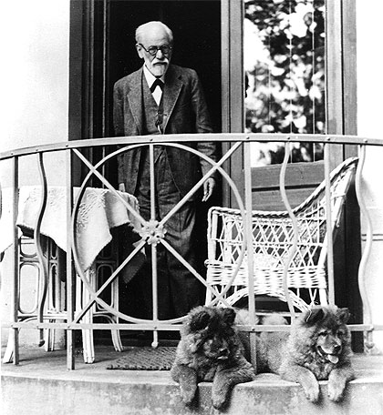

Con el nombre de psicoanálisis se designa tanto al conjunto de teorías formuladas por Freud acerca de la estructura y funcionamiento de la psique humana como al tipo de terapia psicológica basada en la mismas. En su primer sentido, el psicoanálisis envuelve una concepción exhaustiva del ser humano que ejercería una profunda influencia en todos los ámbitos de la cultura, a pesar de que fue polémica y diversamente negada desde sus inicios. En la actualidad, habiendo sido repetidamente señalada la inverificabilidad de algunos de sus dogmas y especulaciones, el psicoanálisis tiende a considerarse más como una escuela psicológica que como una ciencia.
De la histeria al psicoanálisis
El psicoanálisis surgió de un método terapéutico para determinadas enfermedades nerviosas que Sigmund Freud y su colega y compatriota Joseph Breuer elaboraron conjuntamente hacia 1890 y que daría como fruto la obra Estudios sobre la histeria (1895). La primera preocupación de Freud, dentro del campo del psiquismo humano, fue el estudio de la histeria, a través del cual llegó a la conclusión de que los síntomas histéricos eran causados por conflictos psíquicos internos reprimidos. Con los años llegaría a la convicción de que los trastornos mentales tienen su origen en la sexualidad, y de que la vida sexual comienza ya en la primera infancia (mucho antes de lo que en aquellos momentos se pensaba), tesis que había de concitar numerosas críticas y oponentes a su teoría.
El desarrollo de la sexualidad

Freud aportó asimismo una visión evolutiva respecto a la formación de la personalidad al establecer una serie de etapas en el desarrollo sexual. En cada una de la etapas, el fin es siempre común: la consecución de placer sexual, que apacigua las tensiones de la libido. La diferencia entre cada una de ellas está en el objeto que proporciona el placer. El niño recibe gratificación instintiva desde diferentes zonas del cuerpo en función de la etapa en que se encuentra; de este modo, a lo largo del crecimiento, la actividad erótica del niño se centra en diferentes zonas erógenas.